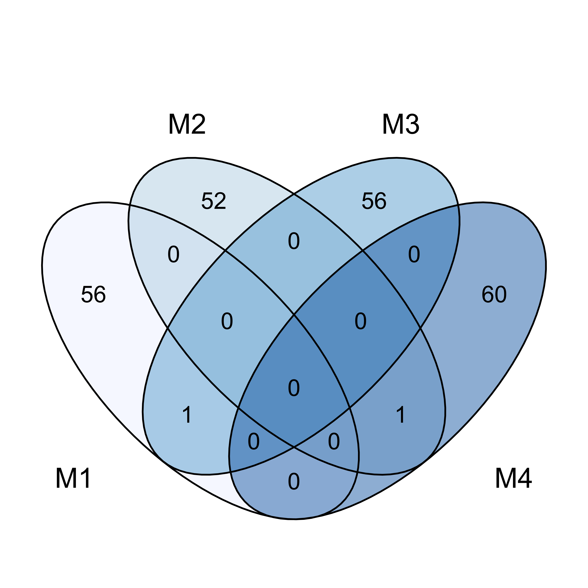

Westerhof 2023 Analysis
Last updated: 2023-08-08
Checks: 7 0
Knit directory: Westerhof/analysis/
This reproducible R Markdown analysis was created with workflowr (version 1.7.0). The Checks tab describes the reproducibility checks that were applied when the results were created. The Past versions tab lists the development history.
Great! Since the R Markdown file has been committed to the Git repository, you know the exact version of the code that produced these results.
Great job! The global environment was empty. Objects defined in the global environment can affect the analysis in your R Markdown file in unknown ways. For reproduciblity it’s best to always run the code in an empty environment.
The command set.seed(20221221) was run prior to running
the code in the R Markdown file. Setting a seed ensures that any results
that rely on randomness, e.g. subsampling or permutations, are
reproducible.
Great job! Recording the operating system, R version, and package versions is critical for reproducibility.
Nice! There were no cached chunks for this analysis, so you can be confident that you successfully produced the results during this run.
Great job! Using relative paths to the files within your workflowr project makes it easier to run your code on other machines.
Great! You are using Git for version control. Tracking code development and connecting the code version to the results is critical for reproducibility.
The results in this page were generated with repository version d197aab. See the Past versions tab to see a history of the changes made to the R Markdown and HTML files.
Note that you need to be careful to ensure that all relevant files for
the analysis have been committed to Git prior to generating the results
(you can use wflow_publish or
wflow_git_commit). workflowr only checks the R Markdown
file, but you know if there are other scripts or data files that it
depends on. Below is the status of the Git repository when the results
were generated:
Ignored files:
Ignored: .DS_Store
Ignored: .Rproj.user/
Ignored: data/.DS_Store
Untracked files:
Untracked: analysis/01-Functions.R
Untracked: data/TCR data/
Untracked: data/individual datasets for each sample/
Untracked: data/overall data/
Untracked: output/01_/
Unstaged changes:
Modified: _workflowr.yml
Modified: analysis/_site.yml
Deleted: analysis/license.Rmd
Deleted: data/README.md
Note that any generated files, e.g. HTML, png, CSS, etc., are not included in this status report because it is ok for generated content to have uncommitted changes.
There are no past versions. Publish this analysis with
wflow_publish() to start tracking its development.
suppressPackageStartupMessages(c(
library(Seurat),
library(dplyr),
library(ggplot2),
library(scRepertoire),
library(cowplot),
library(circlize),
library(ComplexHeatmap),
library(plot1cell),
library(ArchR),
library(ggvenn))) [1] "SeuratObject" "Seurat" "stats"
[4] "graphics" "grDevices" "utils"
[7] "datasets" "workflowr" "methods"
[10] "base" "dplyr" "SeuratObject"
[13] "Seurat" "stats" "graphics"
[16] "grDevices" "utils" "datasets"
[19] "workflowr" "methods" "base"
[22] "ggplot2" "dplyr" "SeuratObject"
[25] "Seurat" "stats" "graphics"
[28] "grDevices" "utils" "datasets"
[31] "workflowr" "methods" "base"
[34] "scRepertoire" "ggplot2" "dplyr"
[37] "SeuratObject" "Seurat" "stats"
[40] "graphics" "grDevices" "utils"
[43] "datasets" "workflowr" "methods"
[46] "base" "cowplot" "scRepertoire"
[49] "ggplot2" "dplyr" "SeuratObject"
[52] "Seurat" "stats" "graphics"
[55] "grDevices" "utils" "datasets"
[58] "workflowr" "methods" "base"
[61] "circlize" "cowplot" "scRepertoire"
[64] "ggplot2" "dplyr" "SeuratObject"
[67] "Seurat" "stats" "graphics"
[70] "grDevices" "utils" "datasets"
[73] "workflowr" "methods" "base"
[76] "ComplexHeatmap" "grid" "circlize"
[79] "cowplot" "scRepertoire" "ggplot2"
[82] "dplyr" "SeuratObject" "Seurat"
[85] "stats" "graphics" "grDevices"
[88] "utils" "datasets" "workflowr"
[91] "methods" "base" "plot1cell"
[94] "wordcloud" "simplifyEnrichment" "GEOquery"
[97] "rlang" "EnsDb.Hsapiens.v86" "ensembldb"
[100] "AnnotationFilter" "GenomicFeatures" "AnnotationDbi"
[103] "Biobase" "GenomicRanges" "GenomeInfoDb"
[106] "IRanges" "S4Vectors" "stats4"
[109] "BiocGenerics" "loomR" "itertools"
[112] "iterators" "R6" "hdf5r"
[115] "Matrix" "data.table" "DoubletFinder"
[118] "matrixStats" "ComplexUpset" "purrr"
[121] "ggbeeswarm" "reshape2" "biomaRt"
[124] "RColorBrewer" "progress" "scales"
[127] "MASS" "ggh4x" "plotly"
[130] "ComplexHeatmap" "grid" "circlize"
[133] "cowplot" "scRepertoire" "ggplot2"
[136] "dplyr" "SeuratObject" "Seurat"
[139] "stats" "graphics" "grDevices"
[142] "utils" "datasets" "workflowr"
[145] "methods" "base" "ArchR"
[148] "magrittr" "rhdf5" "SummarizedExperiment"
[151] "MatrixGenerics" "plot1cell" "wordcloud"
[154] "simplifyEnrichment" "GEOquery" "rlang"
[157] "EnsDb.Hsapiens.v86" "ensembldb" "AnnotationFilter"
[160] "GenomicFeatures" "AnnotationDbi" "Biobase"
[163] "GenomicRanges" "GenomeInfoDb" "IRanges"
[166] "S4Vectors" "stats4" "BiocGenerics"
[169] "loomR" "itertools" "iterators"
[172] "R6" "hdf5r" "Matrix"
[175] "data.table" "DoubletFinder" "matrixStats"
[178] "ComplexUpset" "purrr" "ggbeeswarm"
[181] "reshape2" "biomaRt" "RColorBrewer"
[184] "progress" "scales" "MASS"
[187] "ggh4x" "plotly" "ComplexHeatmap"
[190] "grid" "circlize" "cowplot"
[193] "scRepertoire" "ggplot2" "dplyr"
[196] "SeuratObject" "Seurat" "stats"
[199] "graphics" "grDevices" "utils"
[202] "datasets" "workflowr" "methods"
[205] "base" "ggvenn" "ArchR"
[208] "magrittr" "rhdf5" "SummarizedExperiment"
[211] "MatrixGenerics" "plot1cell" "wordcloud"
[214] "simplifyEnrichment" "GEOquery" "rlang"
[217] "EnsDb.Hsapiens.v86" "ensembldb" "AnnotationFilter"
[220] "GenomicFeatures" "AnnotationDbi" "Biobase"
[223] "GenomicRanges" "GenomeInfoDb" "IRanges"
[226] "S4Vectors" "stats4" "BiocGenerics"
[229] "loomR" "itertools" "iterators"
[232] "R6" "hdf5r" "Matrix"
[235] "data.table" "DoubletFinder" "matrixStats"
[238] "ComplexUpset" "purrr" "ggbeeswarm"
[241] "reshape2" "biomaRt" "RColorBrewer"
[244] "progress" "scales" "MASS"
[247] "ggh4x" "plotly" "ComplexHeatmap"
[250] "grid" "circlize" "cowplot"
[253] "scRepertoire" "ggplot2" "dplyr"
[256] "SeuratObject" "Seurat" "stats"
[259] "graphics" "grDevices" "utils"
[262] "datasets" "workflowr" "methods"
[265] "base" Load Functions
source("01-Functions.R")## Load Data and clean
counts <- read.table("../data/overall data/_1_Combined_TRACE-TCR-full_DBEC_MolsPerCell.csv", skip = 7, sep = ",", header = TRUE, row.names = 1)
colnames(counts) <- gsub("_.*", "", colnames(counts))
Tc <- CreateSeuratObject(counts = t(counts))
Tags <- read.table("../data/individual datasets for each sample/_1_TRACE-TCR-full_Sample_Tag_Calls.csv", skip = 7, sep = ",", header = TRUE, row.names = 1)
Tc$ID <- Tags$Sample_NameSetup & QC
## Remove multiplets and undetermined cells as defined by the BD pipeline
Idents(Tc) <- "ID"
Tc <- subset(Tc, ident = "Multiplet", invert = T)
Tc <- subset(Tc, ident = "Undetermined", invert = T)
## Remove cells with low/high genes or low reads.
Tc <- subset(Tc, subset = nFeature_RNA > 50 & nFeature_RNA < 120 & nCount_RNA <1200)
### Reorder Tissue IDs
ID_Levels <- c("Spleen1", "Spleen2", "Spleen3", "Spleen4", "Lung1", "Lung2", "Lung3", "Lung4")
Tc$ID <- factor(x = Tc@meta.data[["ID"]], levels = ID_Levels)
Idents(Tc) <- "ID"
# Generalised
Tc$Tissue <- Tc$ID
Idents(Tc) <- "Tissue"
Tc <- RenameIdents(Tc,"Spleen1" = "Spleen", "Spleen2" = "Spleen", "Spleen3" = "Spleen", "Spleen4" = "Spleen", "Lung1" = "Lung", "Lung2" = "Lung", "Lung3" = "Lung", "Lung4" = "Lung")
Tc$Tissue <- Idents(Tc)
Tc$Mouse <- Tc$ID
Idents(Tc) <- "Mouse"
Tc <- RenameIdents(Tc, "Spleen1" = "M1", "Lung1" = "M1", "Spleen2" = "M2", "Lung2" = "M2","Spleen3" = "M3", "Lung3" = "M3","Spleen4" = "M4", "Lung4" = "M4")
Tc$Mouse <- Idents(Tc)RNA Normalisation
## Scale and Normalise RNA assay
DefaultAssay(Tc) <- "RNA"
Tc <- NormalizeData(Tc)
all.genes <- rownames(Tc)
Tc <- ScaleData(Tc, features = all.genes)SCT Normalisation and Initial Clustering (Supp 7A)
## Perform ScTransform
Tc <- SCTransform(Tc, verbose = FALSE, return.only.var.genes = FALSE)
## Run PCA
Tc <- RunPCA(Tc, verbose = FALSE)
## Run UMAP
Tc <- RunUMAP(Tc, dims = 1:30, verbose = FALSE)
## Find Nearest Neighbours
Tc <- FindNeighbors(Tc, dims = 1:30, verbose = FALSE)
## Find CLusters
Tc <- FindClusters(Tc, resolution = 1.2, verbose = FALSE)## Plot
Supp7_A <- DimPlot(Tc, reduction = "umap", label = T, pt.size = 0.5) + theme( axis.line = element_line(colour = 'black', size = 2.5), axis.ticks = element_line(size = 5), axis.ticks.length = unit(0.5, "cm"), axis.text = element_text(size = 25), axis.title.x = element_blank(), axis.title.y = element_blank()) + NoLegend()## Initial Annotation
Idents(Tc) <- "seurat_clusters"
CD4ID <- c("Naïve",
"Tem 1",
"Naïve",
"Naïve",
"Naïve",
"Naïve",
"Single +",
"Double +",
"Tem 2",
"Cytotoxic",
"Tem 3",
"Naïve",
"Tem 4",
"Tem 5",
"Triple +" ,
"Eomes_hi",
"Tregs",
"Naïve",
"Naïve")
names(x = CD4ID) <- levels(x = Tc)
Tc <- RenameIdents(object = Tc, CD4ID)
Tc[["CD4ID"]] <- Idents(object = Tc)# Reordered Annotation
Idents(Tc) <- "CD4ID"
simp_Levels <- c(
"Naïve",
"Tregs",
"Tem 1",
"Tem 2",
"Tem 3",
"Tem 4",
"Tem 5",
"Eomes_hi",
"Cytotoxic",
"Single +",
"Double +",
"Triple +")
Tc$CD4ID <- factor(x = Tc@meta.data[["CD4ID"]], levels = simp_Levels)
# Create vector of default colors
ArchR <- ArchRPalettes[1:15]
my_color_palette <- ArchR$bear[c(1,2,3,4,9,10,11,12,14,5,13,15)]
names(my_color_palette) <- as.character(simp_Levels)
# Assign Mouse and Tissue cols
mouse_cols <- brewer.pal(n = length(names(table(Tc$Mouse))), name = "Blues")
names(mouse_cols) <- names(table(Tc$Mouse))
Tissue_cols <- c("#FF2600", "#424242")
names(Tissue_cols) <- c("Spleen", "Lung")Fig 4
Figure 4A
Idents(Tc) <- "CD4ID"
circ_data <- prepare_circlize_data(Tc, scale = 0.65)
set.seed(1234)
## Levels
circ_data$Cluster <- factor(circ_data$Cluster, levels = levels(Tc))
Clusters <- my_color_palette[levels(Tc)]## plot and save figure
dir.create("../output/01_")
png(filename = '../output/01_/Fig4A_UMAP.png', width = 10, height = 10,units = 'in', res = 300)
circos.clear()
circos.par(circle.margin = 0.1)
plot_circlize2(circ_data, do.label = F, pt.size = 1, col.use = Clusters, bg.color = 'white', kde2d.n = 10, repel = T, label.cex = 50, contour.levels = 0)
add_track2(circ_data, group = "Tissue", colors = Tissue_cols , track_num = 2)
add_track2(circ_data, group = "Mouse", colors = mouse_cols, track_num = 3)
invisible(dev.off())
Legends
dir.create('../output/01_/Legends')
png(filename = '../output/01_/Legends/Cluster_Legend.png', width = 10, height = 10,units = 'in', res = 300)
plot(NULL ,xaxt='n',yaxt='n',bty='n',ylab='',xlab='', xlim=0:1, ylim=0:1)
legend("topleft", legend = names(my_color_palette), pch=16, pt.cex=3, cex=1.5, bty='n',
col = my_color_palette)
mtext("Cluster", at=0.2, cex=2)
invisible(dev.off())
png(filename = '../output/01_/Legends/Mouse_Legend.png', width = 10, height = 10,units = 'in', res = 300)
plot(NULL ,xaxt='n',yaxt='n',bty='n',ylab='',xlab='', xlim=0:1, ylim=0:1)
legend("topleft", legend = names(mouse_cols), pch=16, pt.cex=3, cex=1.5, bty='n',
col = mouse_cols)
mtext("Mouse", at=0.2, cex=2)
invisible(dev.off())
png(filename = '../output/01_/Legends/Tissue_Legend.png', width = 10, height = 10,units = 'in', res = 300)
plot(NULL ,xaxt='n',yaxt='n',bty='n',ylab='',xlab='', xlim=0:1, ylim=0:1)
legend("topleft", legend = names(Tissue_cols), pch=16, pt.cex=3, cex=1.5, bty='n',
col = Tissue_cols)
mtext("Tissue", at=0.2, cex=2)
invisible(dev.off())
Fig 4B Cytokine+ Heatmap
## Conduct differential expression testing
DefaultAssay(Tc) <- "RNA"
celltypeDEG <- FindAllMarkers(Tc, test.use = "MAST", assay = "RNA", logfc.threshold = 0.25, min.pct = 0.4, only.pos = T)
## remove non-significant DEGs
celltypeDEG <- subset(celltypeDEG, p_val_adj <0.05)
## save as table
write.csv(celltypeDEG, file = "../output/01_/celltypeDEG.csv")
## remove genes as rownames
rownames(celltypeDEG) <- NULL
## remove duplicates for heatmap visualisation
no.dup <- celltypeDEG %>% group_by(gene) %>%
top_n(1, abs(avg_log2FC))## Create averaged expression per mouse object
Idents(Tc) <- "CD4ID"
Cyto_pos_avg <- AverageExpression(Tc, assays = "RNA", slot = "scale.data", return.seurat = T, add.ident = "Mouse")
Idents(Cyto_pos_avg) <- "orig.ident"
## subset to include cells only from cytokine producing clusters
Cyto_pos_avg <- subset(Cyto_pos_avg, idents = c("Single +", "Double +",
"Triple +" ))
## subset cluster DEGs to include cells only from cytokine producing clusters
Cyto_pos_markers <- celltypeDEG[289:436, ]
## Identify unique and common markers from each group.
x <- split(Cyto_pos_markers, Cyto_pos_markers$cluster)
intersect_all <- function(a,b,...){
Reduce(dplyr::intersect, list(a,b,...))
}
a <- x$`Single +`$gene
b <- x$`Double +`$gene
c <- x$`Triple +`$gene
all <- intersect_all(a,b,c)
all <- subset(Cyto_pos_markers, gene %in% all)
all <- all[!duplicated(all$gene), ]
all$cluster <- "Common"
rownames(all) <- NULL
Single_unique <- setdiff(a, c(b,c))
Single_unique <- subset(Cyto_pos_markers, gene %in% Single_unique)
Single_unique$cluster <- "Single"
rownames(Single_unique) <- NULL
Double_unique <- setdiff(b, c(a,c))
Double_unique <- subset(Cyto_pos_markers, gene %in% Double_unique)
Double_unique$cluster <- "Double"
rownames(Double_unique) <- NULL
Triple_unique <- setdiff(c, c(a,b))
Triple_unique <- subset(Cyto_pos_markers, gene %in% Triple_unique)
Triple_unique$cluster <- "Triple"
rownames(Triple_unique) <- NULL
Double_Triple <- intersect(b,c)
Double_Triple <- setdiff(Double_Triple, a)
Double_Triple <- subset(Cyto_pos_markers, gene %in% Double_Triple)
Double_Triple <- Double_Triple[!duplicated(Double_Triple$gene),]
Double_Triple$cluster <- "Double_Triple"
rownames(Triple_unique) <- NULL
heatmap_genes <- rbind(Single_unique, Double_unique, Triple_unique, Double_Triple, all)
## ensure correct levels
levels(as.factor(heatmap_genes$cluster))[1] "Common" "Double" "Double_Triple" "Single"
[5] "Triple" levels <- c("Single", "Double", "Triple", "Double_Triple", "Common")
heatmap_genes$cluster <- factor(x = heatmap_genes$cluster, levels = levels)
levels(as.factor(heatmap_genes$cluster))[1] "Single" "Double" "Triple" "Double_Triple"
[5] "Common" ## Create heatmap
mtx <- Cyto_pos_avg@assays$RNA@scale.data
mtx <- as.data.frame(mtx)
mtx_sub <-subset(mtx, rownames(mtx) %in% heatmap_genes$gene)
mtx_sub <- mtx_sub %>% arrange(factor(rownames(mtx_sub), levels = heatmap_genes$gene))
mtx_sub <- mtx_sub[, 12:1]
meta <- Cyto_pos_avg@meta.data
meta$cluster <- meta$orig.ident
meta$mouse <- gsub(".*_", "", rownames(Cyto_pos_avg@meta.data))
meta$cluster <- factor(x = meta$cluster, levels = rev(simp_Levels))
meta <- meta[12:1,]
col_fun<-colorRamp2(c(-1.5,-0, 1.5), c("#2166ac", "#EEEEEE", "#b2182b"))
cluster <- HeatmapAnnotation(cluster = meta$cluster, mouse = meta$mouse, show_annotation_name = F, annotation_label = F, annotation_name_rot = 5, show_legend = F, annotation_legend_param = list(labels_gp = gpar(fontsize = 0)), col = list(cluster = c(
"Single +" = "#d33502",
"Double +" = "#0d74b6",
"Triple +" = "#725ca5"), mouse = c(M1= "#EFF3FF", M2= "#BDD7E7", M3= "#6BAED6", M4 = "#2171B5")))
H <- Heatmap(mtx_sub, border = T, top_annotation = cluster, col = col_fun, row_split = heatmap_genes$cluster, column_split = meta$cluster, cluster_rows = F, cluster_columns = F, show_row_dend = F, cluster_row_slices = F, show_column_names = F, cluster_column_slices = F, column_names_side = NULL, row_title = " ", row_title_rot = 270, row_names_side = "left", row_names_rot = -30, heatmap_legend_param = list(legend_direction = "horizontal", legend_width = unit(3, "cm"), labels_gp = gpar(fontsize = 15), labels_rot = -90,
title = "",
title_gp = gpar(box_fill = "grey"),
at = c(-1.5, 0, 1.5)
))
png(filename = '../output/01_/Fig4B_Heatmap.png', width = 3.5, height = 15,units = 'in', res = 300)
draw(H, heatmap_legend_side = "bottom")
invisible(dev.off())
Fig 4D
## Create per mouse averaged expression object (this is redundant as was also conducted above)
Idents(Tc) <- "CD4ID"
Tc.Avg <- AverageExpression(Tc, assays = "RNA", slot = "scale.data", return.seurat = T, add.ident = "Mouse")
survival <- c("Bcl2a1a",
"Bcl2l1",
"Myc",
"Il15ra",
"Il2ra",
"Tnfrsf4",
"Tnfsf8",
"Tnfrsf1b",
"Slamf1",
"Slc7a5",
"Stat5a",
"Stat6",
"Tbx21",
"Tfrc",
"Foxo1",
"Casp1",
"Casp8",
"Cblb",
"Gata3",
"Stat1")## Create heatmap of survival genes
mtx <- Tc.Avg@assays$RNA@scale.data
mtx <- as.data.frame(mtx)
mtx_sub <-subset(mtx, rownames(mtx) %in% survival)
mtx_sub <- mtx_sub %>% arrange(factor(rownames(mtx_sub), levels = survival))
meta <- Tc.Avg@meta.data
meta$cluster <- meta$orig.ident
meta$cluster <- gsub("Eomes", "Eomes_hi", meta$cluster)
meta$mouse <- gsub(".*_", "", rownames(Tc.Avg@meta.data))
meta$cluster <- factor(x = meta$cluster, levels = simp_Levels)
cluster <- HeatmapAnnotation(cluster = meta$cluster, mouse = meta$mouse, show_annotation_name = F, annotation_label = F, annotation_name_rot = 5, show_legend = F, annotation_legend_param = list(labels_gp = gpar(fontsize = 0)), col = list(cluster = c("Naïve" = "#faa818",
"Tregs" = "#41a30d",
"Tem 1" = "#fbdf72",
"Tem 2" = "#367d7d",
"Tem 3" = "#f5b390",
"Tem 4" = "#342739",
"Tem 5" = "#bed678",
"Eomes_hi" = "#a6d9ee",
"Cytotoxic" = "#60824f",
"Single +" = "#d33502",
"Double +" = "#0d74b6",
"Triple +" = "#725ca5"), mouse = c(M1= "#EFF3FF", M2= "#BDD7E7", M3= "#6BAED6", M4 = "#2171B5")))
H <- Heatmap(mtx_sub, border = T, width = ncol(mtx_sub)*unit(2.5, "mm"), height = nrow(mtx_sub)*unit(6, "mm"), top_annotation = cluster, col = col_fun, cluster_rows = F, column_split = meta$cluster, cluster_columns = F, show_row_dend = F, cluster_row_slices = F, show_column_names = F, cluster_column_slices = F, column_names_side = NULL, row_title = " ", column_title = " ", row_title_rot = 270, row_names_side = "left", row_names_rot = 0, heatmap_legend_param = list(legend_direction = "horizontal", legend_width = unit(3, "cm"), labels_gp = gpar(fontsize = 15), labels_rot = -90,
title = "",
title_gp = gpar(box_fill = "grey"),
at = c(-1.5, 0, 1.5)
))
png(filename = '../output/01_/Fig4D_Heatmap.png', width = 6, height = 10,units = 'in', res = 300)
draw(H, heatmap_legend_side = "bottom")
invisible(dev.off())
Supp 6C
png(filename = '../output/01_/Supp_6C_Cd44.png', width = 4, height = 4,units = 'in', res = 300)
FeaturePlot(Tc, "Cd44", max.cutoff = 1.5) & NoAxes() & NoLegend() & theme(aspect.ratio = 1)
invisible(dev.off())
png(filename = '../output/01_/Supp_6C_Sell.png', width = 4, height = 4,units = 'in', res = 300)
FeaturePlot(Tc, "Sell", max.cutoff = 3) & NoAxes() & NoLegend() & theme(aspect.ratio = 1)
invisible(dev.off())

Supp 7
Supp 7B
Idents(Tc) <- "CD4ID"
## create averaged expression object for visualisation
Tc.Avg <- AverageExpression(Tc, assays = "RNA", return.seurat = T)## create heatmap
mtx <- Tc.Avg@assays$RNA@scale.data
mtx <- as.data.frame(mtx)
mtx_sub <-subset(mtx, rownames(mtx) %in% no.dup$gene)
mtx_sub <- mtx_sub %>% arrange(factor(rownames(mtx_sub), levels = no.dup$gene))
meta <- Tc.Avg@meta.data
meta$cluster <- rownames(meta)
col_fun<-colorRamp2(c(-2,-0, 2), c("#2166ac", "#EEEEEE", "#b2182b"))
cluster <- HeatmapAnnotation(cluster = meta$cluster, show_annotation_name = F, annotation_label = F, annotation_name_rot = 5, show_legend = F, annotation_legend_param = list(labels_gp = gpar(fontsize = 0)), col = list(cluster = c(
"Naïve" = "#faa818",
"Tregs" = "#41a30d",
"Tem 1" = "#fbdf72",
"Tem 2" = "#367d7d",
"Tem 3" = "#f5b390",
"Tem 4" = "#342739",
"Tem 5" = "#bed678",
"Eomes_hi" = "#a6d9ee",
"Cytotoxic" = "#60824f",
"Single +" = "#d33502",
"Double +" = "#0d74b6",
"Triple +" = "#725ca5")))
labels = rowAnnotation(x = anno_mark(at = c(1,4,8,14,35,37,39,44,46,50,54,59,63,64,66,68,72,73,74,76,77,85,89,90,92,97,98,102,103,118,119,123,125,135),
labels_rot = -30, labels_gp = gpar(fontsize=10), padding = unit(2, "mm"),
labels = no.dup$gene[c(1,4,8,14,35,37,39,44,46,50,54,59,63,64,66,68,72,73,74,76,77,85,89,90,92,97,98,102,103,118,119,123,125,135)],
side = "left"))
H <- Heatmap(mtx_sub, border = T, top_annotation = cluster, left_annotation = labels, row_names_gp = gpar(fontsize=0), col = col_fun, row_split = no.dup$cluster, cluster_rows = F, cluster_columns = F, show_row_dend = F, cluster_row_slices = F, show_column_names = F, cluster_column_slices = F, column_names_side = NULL, row_title = " ", heatmap_legend_param = list(legend_direction = "horizontal", legend_width = unit(3, "cm"), labels_gp = gpar(fontsize = 15), labels_rot = 0,
title = "",
title_gp = gpar(box_fill = "grey"),
at = c(-2, 0, 2)
))
png(filename = '../output/01_/Supp7B_Heatmap.png', width = 4, height = 8,units = 'in', res = 300)
draw(H, heatmap_legend_side = "bottom")
invisible(dev.off())
Supp 7A, C, D
## create violin plot of cytokine expression
Supp7_C <- VlnPlot(Tc, assay = "RNA", features = c("Tnf", "Ifng", "Il2"), stack = T, flip = T) + theme(plot.margin = unit(c(1,1,1,2), "cm"), axis.title.x = NULL) + xlab("") + NoLegend()## create UMAP split by tissue
Supp7_D <-DimPlot(object = Tc, label = F, pt.size = 2, cols = my_color_palette, split.by = "Tissue") + theme(strip.text.x = element_text(size = 40, face = "bold"), axis.line = element_line(colour = 'black', size = 2.5), axis.ticks = element_line(size = 5), axis.ticks.length = unit(0.5, "cm"), axis.text = element_text(size = 25), axis.title.x = element_blank(), axis.title.y = element_blank()) + NoLegend()## Align supplemental figures 13 A, C and D
plot_list <- list(Supp7_A, Supp7_C, Supp7_D)
png(filename = '../output/01_/Sup7A_C_D.png', width = 5, height = 10,units = 'in', res = 300)
plot_grid(plotlist = plot_list, ncol = 1, align = "v", rel_heights = c(1,1, 1))
invisible(dev.off())
Fig 5
## Load & Save Data from BD
TCR <- load.BD(dir = "../data/TCR data/", file.name = "_1_TRACE-TCR-full_VDJ_perCell.csv")
## Create list with only paired chains
TCR <- combineTCR(TCR, samples = c(""),
ID = c(""), cells = "T-AB", removeNA = T)
## remove _ from barcodes to allow for combining.
ReplaceBarcodes <- gsub("__*", "", TCR[["_"]][["barcode"]])
TCR[["_"]][["barcode"]] <- ReplaceBarcodes
## Combine with Seurat Objects
Tc <- combineExpression(TCR, Tc, cloneCall="gene")
## Recalculate Clonetype based on Mouse
Tc <- recalculateFrequency(Tc, cloneCall = "aa", groupBy = "Mouse")
Tc$Frequency <- Tc$recalFrequency.Mouse
Tc$recalFrequency.Mouse <- NULL
## Remove cells with no paired TCR data
Tc <- subset(Tc, Frequency > 0)
## Assign levels
slot(Tc, "meta.data")$cloneType <- factor(slot(Tc, "meta.data")$cloneType,
levels = c("Hyperexpanded (0.1 < X <= 1)",
"Large (0.01 < X <= 0.1)",
"Medium (0.001 < X <= 0.01)",
"Single Clone", NA))Fig 5A
## Plot representation of cloneTypes within each cluster/
Idents(Tc) <- "CD4ID"
png(filename = '../output/01_/Fig5A.png', width = 7, height = 8,units = 'in', res = 300)
occupiedscRepertoire(Tc,proportion = T, label = F) & coord_flip() & scale_fill_manual("Expansion", values = c("#FF4B20", "#0348A6", "light grey")) & theme(text = element_text(size = 15, colour = "black"), axis.text = element_text(size = 25, colour = "black"), legend.text = element_text(size = 15, colour = "black"), legend.title = element_text(size = 25, colour = "black"), axis.line = element_line(colour = "black"), legend.position = "top", legend.direction = "vertical", plot.margin = unit(c(1,1,1,1), "cm")) & xlab("") & ylab("Proportion")
invisible(dev.off())
Fig 5B
Idents(Tc) <- "cloneType"
## highlight clonetypes per mouse
png(filename = '../output/01_/Fig5B.png', width = 12, height = 3,units = 'in', res = 300)
DimPlot(Tc, group.by = "cloneType", split.by = "Mouse") +
scale_color_manual(values = c("#FF4B20", "#0348A6", "light grey"))
invisible(dev.off())
Fig 5C
## Highlight clones present within each cluster on the UMAP. Note that the clones selected are not defined as unique to each cluster, just that they were found within the 'query' cluster.
## Isolate cells from expanded cloneTypes.
Tc_Exp <- subset(Tc, idents = "Single Clone", invert =T)
## Triple +
Idents(Tc_Exp) = "CD4ID"
Probe <- subset(Tc_Exp, idents = "Triple +")
Probe_Clones <- Probe$CTaa
Idents(Tc) <- "CTaa"
Which <- WhichCells(Tc, idents = Probe_Clones)
Idents(Tc) = "CD4ID"
Triple <- DimPlot(Tc, reduction = "umap", cells.highlight = Which) + ggtitle("Triple") + theme(aspect.ratio = 1, plot.title = element_text(hjust = 0.5, size = 25)) + NoLegend()
## Double +
Idents(Tc_Exp) = "CD4ID"
Probe <- subset(Tc_Exp, idents = "Double +")
Probe_Clones <- Probe$CTaa
Idents(Tc) <- "CTaa"
Which <- WhichCells(Tc, idents = Probe_Clones)
Idents(Tc) = "CD4ID"
Double <- DimPlot(Tc, reduction = "umap", cells.highlight = Which) + ggtitle("Double") + theme(aspect.ratio = 1, plot.title = element_text(hjust = 0.5, size = 25)) + NoLegend()
## Single +
Idents(Tc_Exp) = "CD4ID"
Probe <- subset(Tc_Exp, idents = "Single +")
Probe_Clones <- Probe$CTaa
Idents(Tc) <- "CTaa"
Which <- WhichCells(Tc, idents = Probe_Clones)
Idents(Tc) = "CD4ID"
Single <- DimPlot(Tc, reduction = "umap", cells.highlight = Which) + ggtitle("Single") + theme(aspect.ratio = 1, plot.title = element_text(hjust = 0.5, size = 25)) + NoLegend()
## EM 1
Idents(Tc_Exp) = "CD4ID"
Probe <- subset(Tc_Exp, idents = "Tem 1")
Probe_Clones <- Probe$CTaa
Idents(Tc) <- "CTaa"
Which <- WhichCells(Tc, idents = Probe_Clones)
Idents(Tc) = "CD4ID"
EM1 <- DimPlot(Tc, reduction = "umap", cells.highlight = Which) + ggtitle("TEM 1") + theme(aspect.ratio = 1, plot.title = element_text(hjust = 0.5, size = 25)) + NoLegend()
## EM 2
Idents(Tc_Exp) = "CD4ID"
Probe <- subset(Tc_Exp, idents = "Tem 2")
Probe_Clones <- Probe$CTaa
Idents(Tc) <- "CTaa"
Which <- WhichCells(Tc, idents = Probe_Clones)
Idents(Tc) = "CD4ID"
EM2 <- DimPlot(Tc, reduction = "umap", cells.highlight = Which) + ggtitle("TEM 2") + theme(aspect.ratio = 1, plot.title = element_text(hjust = 0.5, size = 25)) + NoLegend()
## EM 3
Idents(Tc_Exp) = "CD4ID"
Probe <- subset(Tc_Exp, idents = "Tem 3")
Probe_Clones <- Probe$CTaa
Idents(Tc) <- "CTaa"
Which <- WhichCells(Tc, idents = Probe_Clones)
Idents(Tc) = "CD4ID"
EM3 <- DimPlot(Tc, reduction = "umap", cells.highlight = Which) + ggtitle("TEM 3") + theme(aspect.ratio = 1, plot.title = element_text(hjust = 0.5, size = 25)) + NoLegend()
## EM 4
Idents(Tc_Exp) = "CD4ID"
Probe <- subset(Tc_Exp, idents = "Tem 4")
Probe_Clones <- Probe$CTaa
Idents(Tc) <- "CTaa"
Which <- WhichCells(Tc, idents = Probe_Clones)
Idents(Tc) = "CD4ID"
EM4 <- DimPlot(Tc, reduction = "umap", cells.highlight = Which) + ggtitle("TEM 4") + theme(aspect.ratio = 1, plot.title = element_text(hjust = 0.5, size = 25)) + NoLegend()
## EM 5
Idents(Tc_Exp) = "CD4ID"
Probe <- subset(Tc_Exp, idents = "Tem 5")
Probe_Clones <- Probe$CTaa
Idents(Tc) <- "CTaa"
Which <- WhichCells(Tc, idents = Probe_Clones)
Idents(Tc) = "CD4ID"
EM5 <- DimPlot(Tc, reduction = "umap", cells.highlight = Which) + ggtitle("TEM 5") + theme(aspect.ratio = 1, plot.title = element_text(hjust = 0.5, size = 25)) + NoLegend()
## Eomes_hi
Idents(Tc_Exp) = "CD4ID"
Probe <- subset(Tc_Exp, idents = "Eomes_hi")
Probe_Clones <- Probe$CTaa
Idents(Tc) <- "CTaa"
Which <- WhichCells(Tc, idents = Probe_Clones)
Idents(Tc) = "CD4ID"
Eomes <- DimPlot(Tc, reduction = "umap", cells.highlight = Which) + ggtitle("Eomes") + theme(aspect.ratio = 1, plot.title = element_text(hjust = 0.5, size = 25)) + NoLegend()
## Cytotoxic
Idents(Tc_Exp) = "CD4ID"
Probe <- subset(Tc_Exp, idents = "Cytotoxic")
Probe_Clones <- Probe$CTaa
Idents(Tc) <- "CTaa"
Which <- WhichCells(Tc, idents = Probe_Clones)
Idents(Tc) = "CD4ID"
Cyto <- DimPlot(Tc, reduction = "umap", cells.highlight = Which) + ggtitle("Cytotoxic") + theme(aspect.ratio = 1, plot.title = element_text(hjust = 0.5, size = 25)) + NoLegend()plotlist <- list(EM1, EM2, EM3, EM4, EM5, Eomes, Cyto, Single, Double, Triple)
png(filename = '../output/01_/Fig5C.png', width = 12, height = 5,units = 'in', res = 300)
plot_grid(plotlist = plotlist, ncol = 5, align = "v")
invisible(dev.off())
Fig 5D
## Create chord diagram to visualise the overlap in clones between clusters.
circos.clear()
circles <- getCirclize(Tc_Exp, group.by = "CD4ID")
png(filename = '../output/01_/Fig5D.png', width = 4, height = 4,units = 'in', res = 300)
chordDiagram(circles, self.link = 1, grid.col = my_color_palette, directional = 2)
invisible(dev.off())
Fig 5E
## Isolate expanded CDR3 Seqs from expanded for each mouse and probe for overlap (public) verses private cloneTypes
Idents(Tc_Exp) <- "Mouse"
A_TCR <- unique(subset(Tc_Exp, idents = "M1")$CTaa)
B_TCR <- unique(subset(Tc_Exp, idents = "M2")$CTaa)
C_TCR <- unique(subset(Tc_Exp, idents = "M3")$CTaa)
D_TCR <- unique(subset(Tc_Exp, idents = "M4")$CTaa)
Venn <- list('M1' = A_TCR, "M2" = B_TCR, "M3" = C_TCR, "M4" = D_TCR)
col <- mouse_cols
names(col) <- NULL
ggvenn::ggvenn(Venn, show_percentage = F, fill_color = col, text_size = 10, set_name_size = 12) + theme(plot.margin = unit(c(0,0,0,0), "cm"))
Session info
sessionInfo()R version 4.2.3 (2023-03-15)
Platform: x86_64-apple-darwin17.0 (64-bit)
Running under: macOS Big Sur ... 10.16
Matrix products: default
BLAS: /Library/Frameworks/R.framework/Versions/4.2/Resources/lib/libRblas.0.dylib
LAPACK: /Library/Frameworks/R.framework/Versions/4.2/Resources/lib/libRlapack.dylib
locale:
[1] en_US.UTF-8/en_US.UTF-8/en_US.UTF-8/C/en_US.UTF-8/en_US.UTF-8
attached base packages:
[1] stats4 grid stats graphics grDevices utils datasets
[8] methods base
other attached packages:
[1] ggvenn_0.1.9 ArchR_1.0.1
[3] magrittr_2.0.3 rhdf5_2.42.0
[5] SummarizedExperiment_1.28.0 MatrixGenerics_1.10.0
[7] plot1cell_0.0.0.9000 wordcloud_2.6
[9] simplifyEnrichment_1.8.0 GEOquery_2.66.0
[11] rlang_1.1.0 EnsDb.Hsapiens.v86_2.99.0
[13] ensembldb_2.22.0 AnnotationFilter_1.22.0
[15] GenomicFeatures_1.50.4 AnnotationDbi_1.60.2
[17] Biobase_2.58.0 GenomicRanges_1.50.2
[19] GenomeInfoDb_1.34.9 IRanges_2.32.0
[21] S4Vectors_0.36.2 BiocGenerics_0.44.0
[23] loomR_0.2.0 itertools_0.1-3
[25] iterators_1.0.14 R6_2.5.1
[27] hdf5r_1.3.8 Matrix_1.5-3
[29] data.table_1.14.8 DoubletFinder_2.0.3
[31] matrixStats_0.63.0 ComplexUpset_1.3.3
[33] purrr_1.0.1 ggbeeswarm_0.7.1
[35] reshape2_1.4.4 biomaRt_2.54.1
[37] RColorBrewer_1.1-3 progress_1.2.2
[39] scales_1.2.1 MASS_7.3-58.3
[41] ggh4x_0.2.3 plotly_4.10.1
[43] ComplexHeatmap_2.14.0 circlize_0.4.15
[45] cowplot_1.1.1 scRepertoire_1.8.0
[47] ggplot2_3.4.1 dplyr_1.1.1
[49] SeuratObject_4.1.3 Seurat_4.3.0
[51] workflowr_1.7.0
loaded via a namespace (and not attached):
[1] stringdist_0.9.10 ica_1.0-3
[3] ps_1.7.3 Rsamtools_2.14.0
[5] foreach_1.5.2 lmtest_0.9-40
[7] rprojroot_2.0.3 crayon_1.5.2
[9] rhdf5filters_1.10.1 MAST_1.24.1
[11] nlme_3.1-162 GOSemSim_2.24.0
[13] XVector_0.38.0 ROCR_1.0-11
[15] irlba_2.3.5.1 SparseM_1.81
[17] callr_3.7.3 limma_3.54.2
[19] filelock_1.0.2 BiocParallel_1.32.6
[21] rjson_0.2.21 bit64_4.0.5
[23] evmix_2.12 glue_1.6.2
[25] sctransform_0.3.5 parallel_4.2.3
[27] processx_3.8.0 vipor_0.4.5
[29] spatstat.sparse_3.0-1 spatstat.geom_3.1-0
[31] VGAM_1.1-8 tidyselect_1.2.0
[33] powerTCR_1.18.0 fitdistrplus_1.1-8
[35] XML_3.99-0.14 tidyr_1.3.0
[37] zoo_1.8-11 GenomicAlignments_1.34.1
[39] xtable_1.8-4 evaluate_0.20
[41] cli_3.6.1 zlibbioc_1.44.0
[43] rstudioapi_0.14 miniUI_0.1.1.1
[45] sp_1.6-0 whisker_0.4.1
[47] bslib_0.4.2 shiny_1.7.4
[49] xfun_0.38 tm_0.7-11
[51] clue_0.3-64 cluster_2.1.4
[53] tidygraph_1.2.3 KEGGREST_1.38.0
[55] tibble_3.2.1 ggrepel_0.9.3
[57] listenv_0.9.0 Biostrings_2.66.0
[59] png_0.1-8 permute_0.9-7
[61] future_1.32.0 withr_2.5.0
[63] bitops_1.0-7 slam_0.1-50
[65] ggforce_0.4.1 plyr_1.8.8
[67] pillar_1.9.0 RcppParallel_5.1.7
[69] GlobalOptions_0.1.2 cachem_1.0.7
[71] fs_1.6.1 NLP_0.2-1
[73] GetoptLong_1.0.5 vctrs_0.6.1
[75] ellipsis_0.3.2 generics_0.1.3
[77] rgdal_1.6-5 tools_4.2.3
[79] beeswarm_0.4.0 munsell_0.5.0
[81] tweenr_2.0.2 DelayedArray_0.24.0
[83] fastmap_1.1.1 compiler_4.2.3
[85] abind_1.4-5 httpuv_1.6.9
[87] rtracklayer_1.58.0 rgeos_0.6-2
[89] truncdist_1.0-2 GenomeInfoDbData_1.2.9
[91] gridExtra_2.3 lattice_0.20-45
[93] deldir_1.0-6 utf8_1.2.3
[95] later_1.3.0 BiocFileCache_2.6.1
[97] jsonlite_1.8.4 pbapply_1.7-0
[99] lazyeval_0.2.2 promises_1.2.0.1
[101] doParallel_1.0.17 goftest_1.2-3
[103] spatstat.utils_3.0-2 reticulate_1.28
[105] rmarkdown_2.21 Rtsne_0.16
[107] uwot_0.1.14 igraph_1.4.1
[109] proxyC_0.3.3 survival_3.5-5
[111] yaml_2.3.7 htmltools_0.5.5
[113] memoise_2.0.1 BiocIO_1.8.0
[115] graphlayouts_0.8.4 viridisLite_0.4.1
[117] digest_0.6.31 mime_0.12
[119] rappdirs_0.3.3 RSQLite_2.3.0
[121] future.apply_1.10.0 blob_1.2.4
[123] vegan_2.6-4 splines_4.2.3
[125] labeling_0.4.2 Rhdf5lib_1.20.0
[127] Cairo_1.6-0 ProtGenerics_1.30.0
[129] RCurl_1.98-1.12 hms_1.1.3
[131] colorspace_2.1-0 shape_1.4.6
[133] sass_0.4.5 Rcpp_1.0.10
[135] RANN_2.6.1 fansi_1.0.4
[137] tzdb_0.3.0 parallelly_1.35.0
[139] ggridges_0.5.4 lifecycle_1.0.3
[141] curl_5.0.0 leiden_0.4.3
[143] jquerylib_0.1.4 RcppAnnoy_0.0.20
[145] org.Hs.eg.db_3.16.0 spatstat.explore_3.1-0
[147] stringr_1.5.0 htmlwidgets_1.6.2
[149] polyclip_1.10-4 mgcv_1.8-42
[151] globals_0.16.2 patchwork_1.1.2
[153] spatstat.random_3.1-4 progressr_0.13.0
[155] codetools_0.2-19 GO.db_3.16.0
[157] getPass_0.2-2 prettyunits_1.1.1
[159] SingleCellExperiment_1.20.1 dbplyr_2.3.2
[161] gtable_0.3.3 DBI_1.1.3
[163] git2r_0.31.0 ggalluvial_0.12.5
[165] highr_0.10 tensor_1.5
[167] httr_1.4.5 KernSmooth_2.23-20
[169] stringi_1.7.12 farver_2.1.1
[171] cubature_2.0.4.6 viridis_0.6.2
[173] magick_2.7.4 xml2_1.3.3
[175] restfulr_0.0.15 readr_2.1.4
[177] scattermore_0.8 bit_4.0.5
[179] spatstat.data_3.0-1 ggraph_2.1.0
[181] pkgconfig_2.0.3 gsl_2.1-8
[183] evd_2.3-6.1 knitr_1.42
sessionInfo()R version 4.2.3 (2023-03-15)
Platform: x86_64-apple-darwin17.0 (64-bit)
Running under: macOS Big Sur ... 10.16
Matrix products: default
BLAS: /Library/Frameworks/R.framework/Versions/4.2/Resources/lib/libRblas.0.dylib
LAPACK: /Library/Frameworks/R.framework/Versions/4.2/Resources/lib/libRlapack.dylib
locale:
[1] en_US.UTF-8/en_US.UTF-8/en_US.UTF-8/C/en_US.UTF-8/en_US.UTF-8
attached base packages:
[1] stats4 grid stats graphics grDevices utils datasets
[8] methods base
other attached packages:
[1] ggvenn_0.1.9 ArchR_1.0.1
[3] magrittr_2.0.3 rhdf5_2.42.0
[5] SummarizedExperiment_1.28.0 MatrixGenerics_1.10.0
[7] plot1cell_0.0.0.9000 wordcloud_2.6
[9] simplifyEnrichment_1.8.0 GEOquery_2.66.0
[11] rlang_1.1.0 EnsDb.Hsapiens.v86_2.99.0
[13] ensembldb_2.22.0 AnnotationFilter_1.22.0
[15] GenomicFeatures_1.50.4 AnnotationDbi_1.60.2
[17] Biobase_2.58.0 GenomicRanges_1.50.2
[19] GenomeInfoDb_1.34.9 IRanges_2.32.0
[21] S4Vectors_0.36.2 BiocGenerics_0.44.0
[23] loomR_0.2.0 itertools_0.1-3
[25] iterators_1.0.14 R6_2.5.1
[27] hdf5r_1.3.8 Matrix_1.5-3
[29] data.table_1.14.8 DoubletFinder_2.0.3
[31] matrixStats_0.63.0 ComplexUpset_1.3.3
[33] purrr_1.0.1 ggbeeswarm_0.7.1
[35] reshape2_1.4.4 biomaRt_2.54.1
[37] RColorBrewer_1.1-3 progress_1.2.2
[39] scales_1.2.1 MASS_7.3-58.3
[41] ggh4x_0.2.3 plotly_4.10.1
[43] ComplexHeatmap_2.14.0 circlize_0.4.15
[45] cowplot_1.1.1 scRepertoire_1.8.0
[47] ggplot2_3.4.1 dplyr_1.1.1
[49] SeuratObject_4.1.3 Seurat_4.3.0
[51] workflowr_1.7.0
loaded via a namespace (and not attached):
[1] stringdist_0.9.10 ica_1.0-3
[3] ps_1.7.3 Rsamtools_2.14.0
[5] foreach_1.5.2 lmtest_0.9-40
[7] rprojroot_2.0.3 crayon_1.5.2
[9] rhdf5filters_1.10.1 MAST_1.24.1
[11] nlme_3.1-162 GOSemSim_2.24.0
[13] XVector_0.38.0 ROCR_1.0-11
[15] irlba_2.3.5.1 SparseM_1.81
[17] callr_3.7.3 limma_3.54.2
[19] filelock_1.0.2 BiocParallel_1.32.6
[21] rjson_0.2.21 bit64_4.0.5
[23] evmix_2.12 glue_1.6.2
[25] sctransform_0.3.5 parallel_4.2.3
[27] processx_3.8.0 vipor_0.4.5
[29] spatstat.sparse_3.0-1 spatstat.geom_3.1-0
[31] VGAM_1.1-8 tidyselect_1.2.0
[33] powerTCR_1.18.0 fitdistrplus_1.1-8
[35] XML_3.99-0.14 tidyr_1.3.0
[37] zoo_1.8-11 GenomicAlignments_1.34.1
[39] xtable_1.8-4 evaluate_0.20
[41] cli_3.6.1 zlibbioc_1.44.0
[43] rstudioapi_0.14 miniUI_0.1.1.1
[45] sp_1.6-0 whisker_0.4.1
[47] bslib_0.4.2 shiny_1.7.4
[49] xfun_0.38 tm_0.7-11
[51] clue_0.3-64 cluster_2.1.4
[53] tidygraph_1.2.3 KEGGREST_1.38.0
[55] tibble_3.2.1 ggrepel_0.9.3
[57] listenv_0.9.0 Biostrings_2.66.0
[59] png_0.1-8 permute_0.9-7
[61] future_1.32.0 withr_2.5.0
[63] bitops_1.0-7 slam_0.1-50
[65] ggforce_0.4.1 plyr_1.8.8
[67] pillar_1.9.0 RcppParallel_5.1.7
[69] GlobalOptions_0.1.2 cachem_1.0.7
[71] fs_1.6.1 NLP_0.2-1
[73] GetoptLong_1.0.5 vctrs_0.6.1
[75] ellipsis_0.3.2 generics_0.1.3
[77] rgdal_1.6-5 tools_4.2.3
[79] beeswarm_0.4.0 munsell_0.5.0
[81] tweenr_2.0.2 DelayedArray_0.24.0
[83] fastmap_1.1.1 compiler_4.2.3
[85] abind_1.4-5 httpuv_1.6.9
[87] rtracklayer_1.58.0 rgeos_0.6-2
[89] truncdist_1.0-2 GenomeInfoDbData_1.2.9
[91] gridExtra_2.3 lattice_0.20-45
[93] deldir_1.0-6 utf8_1.2.3
[95] later_1.3.0 BiocFileCache_2.6.1
[97] jsonlite_1.8.4 pbapply_1.7-0
[99] lazyeval_0.2.2 promises_1.2.0.1
[101] doParallel_1.0.17 goftest_1.2-3
[103] spatstat.utils_3.0-2 reticulate_1.28
[105] rmarkdown_2.21 Rtsne_0.16
[107] uwot_0.1.14 igraph_1.4.1
[109] proxyC_0.3.3 survival_3.5-5
[111] yaml_2.3.7 htmltools_0.5.5
[113] memoise_2.0.1 BiocIO_1.8.0
[115] graphlayouts_0.8.4 viridisLite_0.4.1
[117] digest_0.6.31 mime_0.12
[119] rappdirs_0.3.3 RSQLite_2.3.0
[121] future.apply_1.10.0 blob_1.2.4
[123] vegan_2.6-4 splines_4.2.3
[125] labeling_0.4.2 Rhdf5lib_1.20.0
[127] Cairo_1.6-0 ProtGenerics_1.30.0
[129] RCurl_1.98-1.12 hms_1.1.3
[131] colorspace_2.1-0 shape_1.4.6
[133] sass_0.4.5 Rcpp_1.0.10
[135] RANN_2.6.1 fansi_1.0.4
[137] tzdb_0.3.0 parallelly_1.35.0
[139] ggridges_0.5.4 lifecycle_1.0.3
[141] curl_5.0.0 leiden_0.4.3
[143] jquerylib_0.1.4 RcppAnnoy_0.0.20
[145] org.Hs.eg.db_3.16.0 spatstat.explore_3.1-0
[147] stringr_1.5.0 htmlwidgets_1.6.2
[149] polyclip_1.10-4 mgcv_1.8-42
[151] globals_0.16.2 patchwork_1.1.2
[153] spatstat.random_3.1-4 progressr_0.13.0
[155] codetools_0.2-19 GO.db_3.16.0
[157] getPass_0.2-2 prettyunits_1.1.1
[159] SingleCellExperiment_1.20.1 dbplyr_2.3.2
[161] gtable_0.3.3 DBI_1.1.3
[163] git2r_0.31.0 ggalluvial_0.12.5
[165] highr_0.10 tensor_1.5
[167] httr_1.4.5 KernSmooth_2.23-20
[169] stringi_1.7.12 farver_2.1.1
[171] cubature_2.0.4.6 viridis_0.6.2
[173] magick_2.7.4 xml2_1.3.3
[175] restfulr_0.0.15 readr_2.1.4
[177] scattermore_0.8 bit_4.0.5
[179] spatstat.data_3.0-1 ggraph_2.1.0
[181] pkgconfig_2.0.3 gsl_2.1-8
[183] evd_2.3-6.1 knitr_1.42